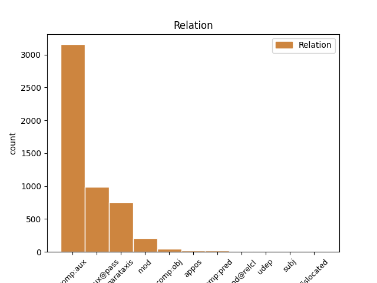
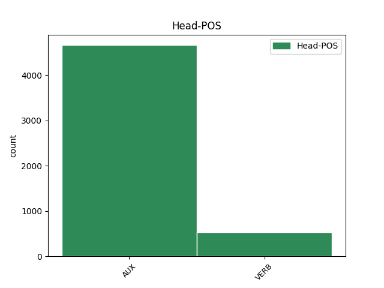
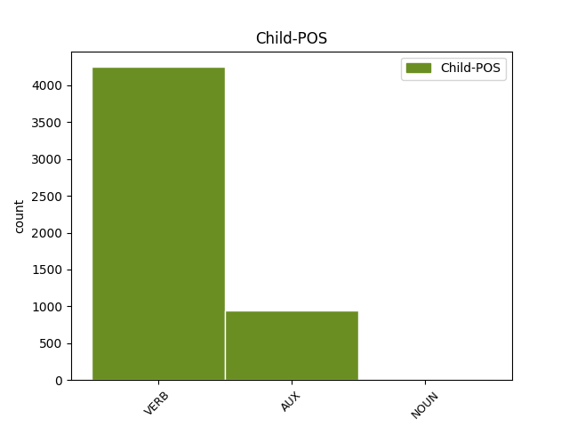

Distribution of features within this leaf



Agreement Rules sorted by frequency.
- When the dependent token is the parataxis(parataxis) of the head token,
1 A _ _ _ _ 0 _ _ _
2 questi _ _ _ _ 0 _ _ _
3 finanziamenti _ _ _ _ 0 _ _ _
4 andrebbero andare AUX VM Mood=Cnd|Number=Plur|Person=3|Tense=Pres|VerbForm=Fin 0 _ _ _
5 aggiunti _ _ _ _ 0 _ _ _
6 , _ _ _ _ 0 _ _ _
7 sostiene sostenere VERB V Mood=Ind|Number=Sing|Person=3|Tense=Pres|VerbForm=Fin 4 parataxis _ _
8 D' _ _ _ _ 0 _ _ _
9 Antoni _ _ _ _ 0 _ _ _
10 , _ _ _ _ 0 _ _ _
11 i _ _ _ _ 0 _ _ _
12 400 _ _ _ _ 0 _ _ _
13 miliardi _ _ _ _ 0 _ _ _
14 destinati _ _ _ _ 0 _ _ _
15 a _ _ _ _ 0 _ _ _
16 la _ _ _ _ 0 _ _ _
17 detrazione _ _ _ _ 0 _ _ _
18 fiscale _ _ _ _ 0 _ _ _
19 per _ _ _ _ 0 _ _ _
20 il _ _ _ _ 0 _ _ _
21 terzo _ _ _ _ 0 _ _ _
22 figlio _ _ _ _ 0 _ _ _
23 . _ _ _ _ 0 _ _ _
1 Questo _ _ _ _ 0 _ _ _
2 corpo _ _ _ _ 0 _ _ _
3 senza _ _ _ _ 0 _ _ _
4 nome _ _ _ _ 0 _ _ _
5 è _ _ _ _ 0 _ _ _
6 stato essere AUX VA Gender=Masc|Number=Sing|Tense=Past|VerbForm=Part 0 _ _ _
7 trovato trovare VERB V Gender=Masc|Number=Sing|Tense=Past|VerbForm=Part 6 comp:aux@pass _ _
8 da _ _ _ _ 0 _ _ _
9 alcuni _ _ _ _ 0 _ _ _
10 caschi _ _ _ _ 0 _ _ _
11 blu _ _ _ _ 0 _ _ _
12 di _ _ _ _ 0 _ _ _
13 pattuglia _ _ _ _ 0 _ _ _
14 intorno _ _ _ _ 0 _ _ _
15 a _ _ _ _ 0 _ _ _
16 la _ _ _ _ 0 _ _ _
17 base _ _ _ _ 0 _ _ _
18 Onu _ _ _ _ 0 _ _ _
19 di _ _ _ _ 0 _ _ _
20 Tuzla _ _ _ _ 0 _ _ _
21 , _ _ _ _ 0 _ _ _
22 in _ _ _ _ 0 _ _ _
23 il _ _ _ _ 0 _ _ _
24 Nord _ _ _ _ 0 _ _ _
25 di _ _ _ _ 0 _ _ _
26 la _ _ _ _ 0 _ _ _
27 Bosnia _ _ _ _ 0 _ _ _
28 . _ _ _ _ 0 _ _ _
1 L' _ _ _ _ 0 _ _ _
2 esplosione _ _ _ _ 0 _ _ _
3 e _ _ _ _ 0 _ _ _
4 il _ _ _ _ 0 _ _ _
5 successivo _ _ _ _ 0 _ _ _
6 incendio _ _ _ _ 0 _ _ _
7 di _ _ _ _ 0 _ _ _
8 uno _ _ _ _ 0 _ _ _
9 di _ _ _ _ 0 _ _ _
10 i _ _ _ _ 0 _ _ _
11 reattori _ _ _ _ 0 _ _ _
12 di _ _ _ _ 0 _ _ _
13 l' _ _ _ _ 0 _ _ _
14 impianto _ _ _ _ 0 _ _ _
15 ucraino _ _ _ _ 0 _ _ _
16 provocò _ _ _ _ 0 _ _ _
17 una _ _ _ _ 0 _ _ _
18 gigantesca _ _ _ _ 0 _ _ _
19 nube _ _ _ _ 0 _ _ _
20 radioattiva _ _ _ _ 0 _ _ _
21 che _ _ _ _ 0 _ _ _
22 attraversò _ _ _ _ 0 _ _ _
23 l' _ _ _ _ 0 _ _ _
24 Europa _ _ _ _ 0 _ _ _
25 e _ _ _ _ 0 _ _ _
26 centinaia _ _ _ _ 0 _ _ _
27 di _ _ _ _ 0 _ _ _
28 migliaia _ _ _ _ 0 _ _ _
29 di _ _ _ _ 0 _ _ _
30 persone _ _ _ _ 0 _ _ _
31 furono essere AUX VA Mood=Ind|Number=Plur|Person=3|Tense=Past|VerbForm=Fin 0 _ _ _
32 contaminate contaminare VERB V Gender=Fem|Number=Plur|Tense=Past|VerbForm=Part 31 comp:aux _ _
33 in _ _ _ _ 0 _ _ _
34 la _ _ _ _ 0 _ _ _
35 regione _ _ _ _ 0 _ _ _
36 che _ _ _ _ 0 _ _ _
37 a _ _ _ _ 0 _ _ _
38 il _ _ _ _ 0 _ _ _
39 tempo _ _ _ _ 0 _ _ _
40 faceva _ _ _ _ 0 _ _ _
41 parte _ _ _ _ 0 _ _ _
42 di _ _ _ _ 0 _ _ _
43 l' _ _ _ _ 0 _ _ _
44 Unione _ _ _ _ 0 _ _ _
45 Sovietica _ _ _ _ 0 _ _ _
46 . _ _ _ _ 0 _ _ _
1 " _ _ _ _ 0 _ _ _
2 caro _ _ _ _ 0 _ _ _
3 e _ _ _ _ 0 _ _ _
4 illustre _ _ _ _ 0 _ _ _
5 presidente _ _ _ _ 0 _ _ _
6 - _ _ _ _ 0 _ _ _
7 scrive _ _ _ _ 0 _ _ _
8 Almirante _ _ _ _ 0 _ _ _
9 - _ _ _ _ 0 _ _ _
10 spero sperare VERB V Mood=Ind|Number=Sing|Person=1|Tense=Pres|VerbForm=Fin 0 _ _ _
11 non _ _ _ _ 0 _ _ _
12 ti _ _ _ _ 0 _ _ _
13 dispiaccia dispiacere VERB V Mood=Ind|Number=Sing|Person=1|Tense=Pres|VerbForm=Fin 10 comp:obj _ _
14 se _ _ _ _ 0 _ _ _
15 per _ _ _ _ 0 _ _ _
16 la _ _ _ _ 0 _ _ _
17 prima _ _ _ _ 0 _ _ _
18 volta _ _ _ _ 0 _ _ _
19 ti _ _ _ _ 0 _ _ _
20 giungono _ _ _ _ 0 _ _ _
21 i _ _ _ _ 0 _ _ _
22 miei _ _ _ _ 0 _ _ _
23 affettuosi _ _ _ _ 0 _ _ _
24 auguri _ _ _ _ 0 _ _ _
25 di _ _ _ _ 0 _ _ _
26 buon _ _ _ _ 0 _ _ _
27 natale _ _ _ _ 0 _ _ _
28 . _ _ _ _ 0 _ _ _
1 Tornato tornare VERB V Gender=Masc|Number=Sing|Tense=Past|VerbForm=Part 5 mod _ _
2 a _ _ _ _ 0 _ _ _
3 Roma _ _ _ _ 0 _ _ _
4 , _ _ _ _ 0 _ _ _
5 guidò guidare VERB V Mood=Ind|Number=Sing|Person=3|Tense=Past|VerbForm=Fin 0 _ _ _
6 per _ _ _ _ 0 _ _ _
7 qualche _ _ _ _ 0 _ _ _
8 mese _ _ _ _ 0 _ _ _
9 la _ _ _ _ 0 _ _ _
10 direzione _ _ _ _ 0 _ _ _
11 di _ _ _ _ 0 _ _ _
12 gli _ _ _ _ 0 _ _ _
13 affari _ _ _ _ 0 _ _ _
14 politici _ _ _ _ 0 _ _ _
15 , _ _ _ _ 0 _ _ _
16 prima _ _ _ _ 0 _ _ _
17 di _ _ _ _ 0 _ _ _
18 assumere _ _ _ _ 0 _ _ _
19 la _ _ _ _ 0 _ _ _
20 segreteria _ _ _ _ 0 _ _ _
21 generale _ _ _ _ 0 _ _ _
22 . _ _ _ _ 0 _ _ _
1 " _ _ _ _ 0 _ _ _
2 questo _ _ _ _ 0 _ _ _
3 tipo _ _ _ _ 0 _ _ _
4 di _ _ _ _ 0 _ _ _
5 iniziative _ _ _ _ 0 _ _ _
6 non _ _ _ _ 0 _ _ _
7 aiutano aiutare VERB V Mood=Ind|Number=Plur|Person=3|Tense=Pres|VerbForm=Fin 0 _ _ _
8 proprio _ _ _ _ 0 _ _ _
9 a _ _ _ _ 0 _ _ _
10 risolvere _ _ _ _ 0 _ _ _
11 il _ _ _ _ 0 _ _ _
12 problema _ _ _ _ 0 _ _ _
13 " _ _ _ _ 0 _ _ _
14 , _ _ _ _ 0 _ _ _
15 ha avere AUX VA Mood=Ind|Number=Sing|Person=3|Tense=Pres|VerbForm=Fin 7 appos _ _
16 detto _ _ _ _ 0 _ _ _
17 il _ _ _ _ 0 _ _ _
18 portavoce _ _ _ _ 0 _ _ _
19 di _ _ _ _ 0 _ _ _
20 il _ _ _ _ 0 _ _ _
21 Ministero _ _ _ _ 0 _ _ _
22 Degli _ _ _ _ 0 _ _ _
23 Esteri _ _ _ _ 0 _ _ _
24 . _ _ _ _ 0 _ _ _
1 Chi _ _ _ _ 0 _ _ _
2 lo _ _ _ _ 0 _ _ _
3 conosce conoscere VERB V Mood=Ind|Number=Sing|Person=3|Tense=Pres|VerbForm=Fin 5 mod@relcl _ _
4 lo _ _ _ _ 0 _ _ _
5 descrive descrivere VERB V Mood=Ind|Number=Sing|Person=3|Tense=Pres|VerbForm=Fin 0 _ _ _
6 come _ _ _ _ 0 _ _ _
7 un _ _ _ _ 0 _ _ _
8 segretario _ _ _ _ 0 _ _ _
9 generale _ _ _ _ 0 _ _ _
10 " _ _ _ _ 0 _ _ _
11 più _ _ _ _ 0 _ _ _
12 politico _ _ _ _ 0 _ _ _
13 che _ _ _ _ 0 _ _ _
14 amministratore _ _ _ _ 0 _ _ _
15 " _ _ _ _ 0 _ _ _
16 , _ _ _ _ 0 _ _ _
17 più _ _ _ _ 0 _ _ _
18 portato _ _ _ _ 0 _ _ _
19 cioè _ _ _ _ 0 _ _ _
20 a _ _ _ _ 0 _ _ _
21 la _ _ _ _ 0 _ _ _
22 costruzione _ _ _ _ 0 _ _ _
23 di _ _ _ _ 0 _ _ _
24 la _ _ _ _ 0 _ _ _
25 linea _ _ _ _ 0 _ _ _
26 di _ _ _ _ 0 _ _ _
27 politica _ _ _ _ 0 _ _ _
28 estera _ _ _ _ 0 _ _ _
29 che _ _ _ _ 0 _ _ _
30 a _ _ _ _ 0 _ _ _
31 la _ _ _ _ 0 _ _ _
32 gestione _ _ _ _ 0 _ _ _
33 . _ _ _ _ 0 _ _ _
1 Mutano mutare VERB V Mood=Ind|Number=Plur|Person=3|Tense=Pres|VerbForm=Fin 0 _ _ _
2 anche _ _ _ _ 0 _ _ _
3 le _ _ _ _ 0 _ _ _
4 caratteristiche _ _ _ _ 0 _ _ _
5 di _ _ _ _ 0 _ _ _
6 il _ _ _ _ 0 _ _ _
7 lavoro _ _ _ _ 0 _ _ _
8 operaio _ _ _ _ 0 _ _ _
9 , _ _ _ _ 0 _ _ _
10 ma _ _ _ _ 0 _ _ _
11 i _ _ _ _ 0 _ _ _
12 processi _ _ _ _ 0 _ _ _
13 di _ _ _ _ 0 _ _ _
14 qualificazione _ _ _ _ 0 _ _ _
15 investono investire VERB V Mood=Ind|Number=Plur|Person=3|Tense=Pres|VerbForm=Fin 1 subj _ _
16 una _ _ _ _ 0 _ _ _
17 minoranza _ _ _ _ 0 _ _ _
18 , _ _ _ _ 0 _ _ _
19 mentre _ _ _ _ 0 _ _ _
20 la _ _ _ _ 0 _ _ _
21 flessibilità _ _ _ _ 0 _ _ _
22 di _ _ _ _ 0 _ _ _
23 le _ _ _ _ 0 _ _ _
24 più _ _ _ _ 0 _ _ _
25 recenti _ _ _ _ 0 _ _ _
26 tecnologie _ _ _ _ 0 _ _ _
27 consentirebbe _ _ _ _ 0 _ _ _
28 di _ _ _ _ 0 _ _ _
29 elevare _ _ _ _ 0 _ _ _
30 più _ _ _ _ 0 _ _ _
31 largamente _ _ _ _ 0 _ _ _
32 la _ _ _ _ 0 _ _ _
33 qualifica _ _ _ _ 0 _ _ _
34 di _ _ _ _ 0 _ _ _
35 il _ _ _ _ 0 _ _ _
36 lavoro _ _ _ _ 0 _ _ _
37 . _ _ _ _ 0 _ _ _
1 Un _ _ _ _ 0 _ _ _
2 rinvio _ _ _ _ 0 _ _ _
3 chiesto _ _ _ _ 0 _ _ _
4 da _ _ _ _ 0 _ _ _
5 Dotti _ _ _ _ 0 _ _ _
6 a _ _ _ _ 0 _ _ _
7 il _ _ _ _ 0 _ _ _
8 Presidente _ _ _ _ 0 _ _ _
9 di _ _ _ _ 0 _ _ _
10 la _ _ _ _ 0 _ _ _
11 Camera _ _ _ _ 0 _ _ _
12 Irene _ _ _ _ 0 _ _ _
13 Pivetti _ _ _ _ 0 _ _ _
14 : _ _ _ _ 0 _ _ _
15 in _ _ _ _ 0 _ _ _
16 presenza _ _ _ _ 0 _ _ _
17 di _ _ _ _ 0 _ _ _
18 i _ _ _ _ 0 _ _ _
19 lavori _ _ _ _ 0 _ _ _
20 di _ _ _ _ 0 _ _ _
21 l' _ _ _ _ 0 _ _ _
22 aula _ _ _ _ 0 _ _ _
23 ( _ _ _ _ 0 _ _ _
24 a _ _ _ _ 0 _ _ _
25 la _ _ _ _ 0 _ _ _
26 Camera _ _ _ _ 0 _ _ _
27 c' _ _ _ _ 0 _ _ _
28 è essere AUX VA Mood=Ind|Number=Sing|Person=3|Tense=Pres|VerbForm=Fin 43 udep _ _
29 in _ _ _ _ 0 _ _ _
30 discussione _ _ _ _ 0 _ _ _
31 la _ _ _ _ 0 _ _ _
32 fiducia _ _ _ _ 0 _ _ _
33 su _ _ _ _ 0 _ _ _
34 le _ _ _ _ 0 _ _ _
35 pensioni _ _ _ _ 0 _ _ _
36 ) _ _ _ _ 0 _ _ _
37 , _ _ _ _ 0 _ _ _
38 le _ _ _ _ 0 _ _ _
39 riunioni _ _ _ _ 0 _ _ _
40 di _ _ _ _ 0 _ _ _
41 le _ _ _ _ 0 _ _ _
42 commissioni _ _ _ _ 0 _ _ _
43 possono potere AUX VM Mood=Ind|Number=Plur|Person=3|Tense=Pres|VerbForm=Fin 0 _ _ _
44 svolger _ _ _ _ 0 _ _ _
45 si _ _ _ _ 0 _ _ _
46 solo _ _ _ _ 0 _ _ _
47 se _ _ _ _ 0 _ _ _
48 c' _ _ _ _ 0 _ _ _
49 è _ _ _ _ 0 _ _ _
50 il _ _ _ _ 0 _ _ _
51 consenso _ _ _ _ 0 _ _ _
52 di _ _ _ _ 0 _ _ _
53 tutti _ _ _ _ 0 _ _ _
54 i _ _ _ _ 0 _ _ _
55 gruppi _ _ _ _ 0 _ _ _
56 . _ _ _ _ 0 _ _ _
1 Ho _ _ _ _ 0 _ _ _
2 delegato _ _ _ _ 0 _ _ _
3 Sandra _ _ _ _ 0 _ _ _
4 , _ _ _ _ 0 _ _ _
5 con _ _ _ _ 0 _ _ _
6 la _ _ _ _ 0 _ _ _
7 quale _ _ _ _ 0 _ _ _
8 sono _ _ _ _ 0 _ _ _
9 in _ _ _ _ 0 _ _ _
10 piena _ _ _ _ 0 _ _ _
11 sintonia _ _ _ _ 0 _ _ _
12 , _ _ _ _ 0 _ _ _
13 e _ _ _ _ 0 _ _ _
14 la _ _ _ _ 0 _ _ _
15 redigente redigere NOUN S Number=Sing|Tense=Pres|VerbForm=Part 20 dislocated _ _
16 a _ _ _ _ 0 _ _ _
17 quel _ _ _ _ 0 _ _ _
18 punto _ _ _ _ 0 _ _ _
19 l' _ _ _ _ 0 _ _ _
20 avrei avere AUX VA Mood=Cnd|Number=Sing|Person=1|Tense=Pres|VerbForm=Fin 0 _ _ _
21 firmata _ _ _ _ 0 _ _ _
22 anch' _ _ _ _ 0 _ _ _
23 io _ _ _ _ 0 _ _ _
24 " _ _ _ _ 0 _ _ _
25 . _ _ _ _ 0 _ _ _
1 L' _ _ _ _ 0 _ _ _
2 intera _ _ _ _ 0 _ _ _
3 isola _ _ _ _ 0 _ _ _
4 di _ _ _ _ 0 _ _ _
5 Tahiti _ _ _ _ 0 _ _ _
6 era _ _ _ _ 0 _ _ _
7 rimasta rimanere VERB V Gender=Fem|Number=Sing|Tense=Past|VerbForm=Part 0 _ _ _
8 bloccata bloccare VERB V Gender=Fem|Number=Sing|Tense=Past|VerbForm=Part 7 comp:pred _ _
9 per _ _ _ _ 0 _ _ _
10 tre _ _ _ _ 0 _ _ _
11 giorni _ _ _ _ 0 _ _ _
12 , _ _ _ _ 0 _ _ _
13 fino _ _ _ _ 0 _ _ _
14 a _ _ _ _ 0 _ _ _
15 la _ _ _ _ 0 _ _ _
16 partenza _ _ _ _ 0 _ _ _
17 di _ _ _ _ 0 _ _ _
18 la _ _ _ _ 0 _ _ _
19 nave _ _ _ _ 0 _ _ _
20 " _ _ _ _ 0 _ _ _
21 Verde _ _ _ _ 0 _ _ _
22 " _ _ _ _ 0 _ _ _
23 in _ _ _ _ 0 _ _ _
24 direzione _ _ _ _ 0 _ _ _
25 di _ _ _ _ 0 _ _ _
26 Mururoa _ _ _ _ 0 _ _ _
27 . _ _ _ _ 0 _ _ _
Disagree Examples:
1 In _ _ _ _ 0 _ _ _
2 gli _ _ _ _ 0 _ _ _
3 ultimi _ _ _ _ 0 _ _ _
4 anni _ _ _ _ 0 _ _ _
5 la _ _ _ _ 0 _ _ _
6 dinamica _ _ _ _ 0 _ _ _
7 di _ _ _ _ 0 _ _ _
8 i _ _ _ _ 0 _ _ _
9 polo _ _ _ _ 0 _ _ _
10 di _ _ _ _ 0 _ _ _
11 attrazione _ _ _ _ 0 _ _ _
12 è essere AUX VA Mood=Ind|Number=Sing|Person=3|Tense=Pres|VerbForm=Fin 0 _ _ _
13 stata essere AUX VA Gender=Fem|Number=Sing|Tense=Past|VerbForm=Part 12 comp:aux _ _
14 sempre _ _ _ _ 0 _ _ _
15 più _ _ _ _ 0 _ _ _
16 caratterizzata _ _ _ _ 0 _ _ _
17 da _ _ _ _ 0 _ _ _
18 l' _ _ _ _ 0 _ _ _
19 emergere _ _ _ _ 0 _ _ _
20 di _ _ _ _ 0 _ _ _
21 una _ _ _ _ 0 _ _ _
22 crescente _ _ _ _ 0 _ _ _
23 concorrenza _ _ _ _ 0 _ _ _
24 che _ _ _ _ 0 _ _ _
25 si _ _ _ _ 0 _ _ _
26 è _ _ _ _ 0 _ _ _
27 progressivamente _ _ _ _ 0 _ _ _
28 spostata _ _ _ _ 0 _ _ _
29 da _ _ _ _ 0 _ _ _
30 le _ _ _ _ 0 _ _ _
31 singole _ _ _ _ 0 _ _ _
32 imprese _ _ _ _ 0 _ _ _
33 a _ _ _ _ 0 _ _ _
34 i _ _ _ _ 0 _ _ _
35 sistemi _ _ _ _ 0 _ _ _
36 economici _ _ _ _ 0 _ _ _
37 e _ _ _ _ 0 _ _ _
38 territoriali _ _ _ _ 0 _ _ _
39 , _ _ _ _ 0 _ _ _
40 determinando _ _ _ _ 0 _ _ _
41 l' _ _ _ _ 0 _ _ _
42 esigenza _ _ _ _ 0 _ _ _
43 di _ _ _ _ 0 _ _ _
44 una _ _ _ _ 0 _ _ _
45 riconsiderazione _ _ _ _ 0 _ _ _
46 di _ _ _ _ 0 _ _ _
47 i _ _ _ _ 0 _ _ _
48 rapporti _ _ _ _ 0 _ _ _
49 esistenti _ _ _ _ 0 _ _ _
50 tra _ _ _ _ 0 _ _ _
51 soggetti _ _ _ _ 0 _ _ _
52 produttivi _ _ _ _ 0 _ _ _
53 e _ _ _ _ 0 _ _ _
54 ambiente _ _ _ _ 0 _ _ _
55 in _ _ _ _ 0 _ _ _
56 cui _ _ _ _ 0 _ _ _
57 questi _ _ _ _ 0 _ _ _
58 operano _ _ _ _ 0 _ _ _
59 . _ _ _ _ 0 _ _ _
1 In _ _ _ _ 0 _ _ _
2 gli _ _ _ _ 0 _ _ _
3 ultimi _ _ _ _ 0 _ _ _
4 anni _ _ _ _ 0 _ _ _
5 la _ _ _ _ 0 _ _ _
6 dinamica _ _ _ _ 0 _ _ _
7 di _ _ _ _ 0 _ _ _
8 i _ _ _ _ 0 _ _ _
9 polo _ _ _ _ 0 _ _ _
10 di _ _ _ _ 0 _ _ _
11 attrazione _ _ _ _ 0 _ _ _
12 è _ _ _ _ 0 _ _ _
13 stata _ _ _ _ 0 _ _ _
14 sempre _ _ _ _ 0 _ _ _
15 più _ _ _ _ 0 _ _ _
16 caratterizzata _ _ _ _ 0 _ _ _
17 da _ _ _ _ 0 _ _ _
18 l' _ _ _ _ 0 _ _ _
19 emergere _ _ _ _ 0 _ _ _
20 di _ _ _ _ 0 _ _ _
21 una _ _ _ _ 0 _ _ _
22 crescente _ _ _ _ 0 _ _ _
23 concorrenza _ _ _ _ 0 _ _ _
24 che _ _ _ _ 0 _ _ _
25 si _ _ _ _ 0 _ _ _
26 è essere AUX VA Mood=Ind|Number=Sing|Person=3|Tense=Pres|VerbForm=Fin 0 _ _ _
27 progressivamente _ _ _ _ 0 _ _ _
28 spostata spostare VERB V Gender=Fem|Number=Sing|Tense=Past|VerbForm=Part 26 comp:aux _ _
29 da _ _ _ _ 0 _ _ _
30 le _ _ _ _ 0 _ _ _
31 singole _ _ _ _ 0 _ _ _
32 imprese _ _ _ _ 0 _ _ _
33 a _ _ _ _ 0 _ _ _
34 i _ _ _ _ 0 _ _ _
35 sistemi _ _ _ _ 0 _ _ _
36 economici _ _ _ _ 0 _ _ _
37 e _ _ _ _ 0 _ _ _
38 territoriali _ _ _ _ 0 _ _ _
39 , _ _ _ _ 0 _ _ _
40 determinando _ _ _ _ 0 _ _ _
41 l' _ _ _ _ 0 _ _ _
42 esigenza _ _ _ _ 0 _ _ _
43 di _ _ _ _ 0 _ _ _
44 una _ _ _ _ 0 _ _ _
45 riconsiderazione _ _ _ _ 0 _ _ _
46 di _ _ _ _ 0 _ _ _
47 i _ _ _ _ 0 _ _ _
48 rapporti _ _ _ _ 0 _ _ _
49 esistenti _ _ _ _ 0 _ _ _
50 tra _ _ _ _ 0 _ _ _
51 soggetti _ _ _ _ 0 _ _ _
52 produttivi _ _ _ _ 0 _ _ _
53 e _ _ _ _ 0 _ _ _
54 ambiente _ _ _ _ 0 _ _ _
55 in _ _ _ _ 0 _ _ _
56 cui _ _ _ _ 0 _ _ _
57 questi _ _ _ _ 0 _ _ _
58 operano _ _ _ _ 0 _ _ _
59 . _ _ _ _ 0 _ _ _
1 Quest' _ _ _ _ 0 _ _ _
2 ultimo _ _ _ _ 0 _ _ _
3 è _ _ _ _ 0 _ _ _
4 funzione _ _ _ _ 0 _ _ _
5 di _ _ _ _ 0 _ _ _
6 variabili _ _ _ _ 0 _ _ _
7 strutturali _ _ _ _ 0 _ _ _
8 tra _ _ _ _ 0 _ _ _
9 cui _ _ _ _ 0 _ _ _
10 le _ _ _ _ 0 _ _ _
11 istituzioni _ _ _ _ 0 _ _ _
12 , _ _ _ _ 0 _ _ _
13 i _ _ _ _ 0 _ _ _
14 settori _ _ _ _ 0 _ _ _
15 produttivi _ _ _ _ 0 _ _ _
16 , _ _ _ _ 0 _ _ _
17 il _ _ _ _ 0 _ _ _
18 mix _ _ _ _ 0 _ _ _
19 pubblico _ _ _ _ 0 _ _ _
20 privato _ _ _ _ 0 _ _ _
21 , _ _ _ _ 0 _ _ _
22 le _ _ _ _ 0 _ _ _
23 risorse _ _ _ _ 0 _ _ _
24 umane _ _ _ _ 0 _ _ _
25 e _ _ _ _ 0 _ _ _
26 naturali _ _ _ _ 0 _ _ _
27 , _ _ _ _ 0 _ _ _
28 le _ _ _ _ 0 _ _ _
29 infrastrutture _ _ _ _ 0 _ _ _
30 , _ _ _ _ 0 _ _ _
31 le _ _ _ _ 0 _ _ _
32 radici _ _ _ _ 0 _ _ _
33 culturali _ _ _ _ 0 _ _ _
34 che _ _ _ _ 0 _ _ _
35 si _ _ _ _ 0 _ _ _
36 modificano _ _ _ _ 0 _ _ _
37 in _ _ _ _ 0 _ _ _
38 genere _ _ _ _ 0 _ _ _
39 attraverso _ _ _ _ 0 _ _ _
40 processi _ _ _ _ 0 _ _ _
41 di _ _ _ _ 0 _ _ _
42 lungo _ _ _ _ 0 _ _ _
43 periodo _ _ _ _ 0 _ _ _
44 , _ _ _ _ 0 _ _ _
45 ma _ _ _ _ 0 _ _ _
46 che _ _ _ _ 0 _ _ _
47 recentemente _ _ _ _ 0 _ _ _
48 hanno avere AUX VA Mood=Ind|Number=Plur|Person=3|Tense=Pres|VerbForm=Fin 0 _ _ _
49 mostrato mostrare VERB V Gender=Masc|Number=Sing|Tense=Past|VerbForm=Part 48 comp:aux _ _
50 una _ _ _ _ 0 _ _ _
51 forte _ _ _ _ 0 _ _ _
52 accelerazione _ _ _ _ 0 _ _ _
53 , _ _ _ _ 0 _ _ _
54 incalzati _ _ _ _ 0 _ _ _
55 da _ _ _ _ 0 _ _ _
56 eventi _ _ _ _ 0 _ _ _
57 imprevedibili _ _ _ _ 0 _ _ _
58 quali _ _ _ _ 0 _ _ _
59 la _ _ _ _ 0 _ _ _
60 fine _ _ _ _ 0 _ _ _
61 di _ _ _ _ 0 _ _ _
62 la _ _ _ _ 0 _ _ _
63 guerra _ _ _ _ 0 _ _ _
64 fredda _ _ _ _ 0 _ _ _
65 , _ _ _ _ 0 _ _ _
66 a _ _ _ _ 0 _ _ _
67 livello _ _ _ _ 0 _ _ _
68 mondiale _ _ _ _ 0 _ _ _
69 , _ _ _ _ 0 _ _ _
70 e _ _ _ _ 0 _ _ _
71 l' _ _ _ _ 0 _ _ _
72 avviato _ _ _ _ 0 _ _ _
73 processo _ _ _ _ 0 _ _ _
74 di _ _ _ _ 0 _ _ _
75 trasformazione _ _ _ _ 0 _ _ _
76 di _ _ _ _ 0 _ _ _
77 le _ _ _ _ 0 _ _ _
78 istituzioni _ _ _ _ 0 _ _ _
79 , _ _ _ _ 0 _ _ _
80 in _ _ _ _ 0 _ _ _
81 Italia _ _ _ _ 0 _ _ _
82 . _ _ _ _ 0 _ _ _
1 Quest' _ _ _ _ 0 _ _ _
2 ultimo _ _ _ _ 0 _ _ _
3 è _ _ _ _ 0 _ _ _
4 funzione _ _ _ _ 0 _ _ _
5 di _ _ _ _ 0 _ _ _
6 variabili _ _ _ _ 0 _ _ _
7 strutturali _ _ _ _ 0 _ _ _
8 tra _ _ _ _ 0 _ _ _
9 cui _ _ _ _ 0 _ _ _
10 le _ _ _ _ 0 _ _ _
11 istituzioni _ _ _ _ 0 _ _ _
12 , _ _ _ _ 0 _ _ _
13 i _ _ _ _ 0 _ _ _
14 settori _ _ _ _ 0 _ _ _
15 produttivi _ _ _ _ 0 _ _ _
16 , _ _ _ _ 0 _ _ _
17 il _ _ _ _ 0 _ _ _
18 mix _ _ _ _ 0 _ _ _
19 pubblico _ _ _ _ 0 _ _ _
20 privato _ _ _ _ 0 _ _ _
21 , _ _ _ _ 0 _ _ _
22 le _ _ _ _ 0 _ _ _
23 risorse _ _ _ _ 0 _ _ _
24 umane _ _ _ _ 0 _ _ _
25 e _ _ _ _ 0 _ _ _
26 naturali _ _ _ _ 0 _ _ _
27 , _ _ _ _ 0 _ _ _
28 le _ _ _ _ 0 _ _ _
29 infrastrutture _ _ _ _ 0 _ _ _
30 , _ _ _ _ 0 _ _ _
31 le _ _ _ _ 0 _ _ _
32 radici _ _ _ _ 0 _ _ _
33 culturali _ _ _ _ 0 _ _ _
34 che _ _ _ _ 0 _ _ _
35 si _ _ _ _ 0 _ _ _
36 modificano _ _ _ _ 0 _ _ _
37 in _ _ _ _ 0 _ _ _
38 genere _ _ _ _ 0 _ _ _
39 attraverso _ _ _ _ 0 _ _ _
40 processi _ _ _ _ 0 _ _ _
41 di _ _ _ _ 0 _ _ _
42 lungo _ _ _ _ 0 _ _ _
43 periodo _ _ _ _ 0 _ _ _
44 , _ _ _ _ 0 _ _ _
45 ma _ _ _ _ 0 _ _ _
46 che _ _ _ _ 0 _ _ _
47 recentemente _ _ _ _ 0 _ _ _
48 hanno avere AUX VA Mood=Ind|Number=Plur|Person=3|Tense=Pres|VerbForm=Fin 0 _ _ _
49 mostrato _ _ _ _ 0 _ _ _
50 una _ _ _ _ 0 _ _ _
51 forte _ _ _ _ 0 _ _ _
52 accelerazione _ _ _ _ 0 _ _ _
53 , _ _ _ _ 0 _ _ _
54 incalzati incalzare VERB V Gender=Masc|Number=Plur|Tense=Past|VerbForm=Part 48 mod _ _
55 da _ _ _ _ 0 _ _ _
56 eventi _ _ _ _ 0 _ _ _
57 imprevedibili _ _ _ _ 0 _ _ _
58 quali _ _ _ _ 0 _ _ _
59 la _ _ _ _ 0 _ _ _
60 fine _ _ _ _ 0 _ _ _
61 di _ _ _ _ 0 _ _ _
62 la _ _ _ _ 0 _ _ _
63 guerra _ _ _ _ 0 _ _ _
64 fredda _ _ _ _ 0 _ _ _
65 , _ _ _ _ 0 _ _ _
66 a _ _ _ _ 0 _ _ _
67 livello _ _ _ _ 0 _ _ _
68 mondiale _ _ _ _ 0 _ _ _
69 , _ _ _ _ 0 _ _ _
70 e _ _ _ _ 0 _ _ _
71 l' _ _ _ _ 0 _ _ _
72 avviato _ _ _ _ 0 _ _ _
73 processo _ _ _ _ 0 _ _ _
74 di _ _ _ _ 0 _ _ _
75 trasformazione _ _ _ _ 0 _ _ _
76 di _ _ _ _ 0 _ _ _
77 le _ _ _ _ 0 _ _ _
78 istituzioni _ _ _ _ 0 _ _ _
79 , _ _ _ _ 0 _ _ _
80 in _ _ _ _ 0 _ _ _
81 Italia _ _ _ _ 0 _ _ _
82 . _ _ _ _ 0 _ _ _
1 Il _ _ _ _ 0 _ _ _
2 contesto _ _ _ _ 0 _ _ _
3 milanese _ _ _ _ 0 _ _ _
4 , _ _ _ _ 0 _ _ _
5 se _ _ _ _ 0 _ _ _
6 da _ _ _ _ 0 _ _ _
7 un _ _ _ _ 0 _ _ _
8 lato _ _ _ _ 0 _ _ _
9 è essere AUX VA Mood=Ind|Number=Sing|Person=3|Tense=Pres|VerbForm=Fin 0 _ _ _
10 stato essere AUX VA Gender=Masc|Number=Sing|Tense=Past|VerbForm=Part 9 comp:aux _ _
11 teatro _ _ _ _ 0 _ _ _
12 privilegiato _ _ _ _ 0 _ _ _
13 di _ _ _ _ 0 _ _ _
14 i _ _ _ _ 0 _ _ _
15 processi _ _ _ _ 0 _ _ _
16 di _ _ _ _ 0 _ _ _
17 trasformazione _ _ _ _ 0 _ _ _
18 in _ _ _ _ 0 _ _ _
19 atto _ _ _ _ 0 _ _ _
20 in _ _ _ _ 0 _ _ _
21 il _ _ _ _ 0 _ _ _
22 paese _ _ _ _ 0 _ _ _
23 , _ _ _ _ 0 _ _ _
24 da _ _ _ _ 0 _ _ _
25 l' _ _ _ _ 0 _ _ _
26 altro _ _ _ _ 0 _ _ _
27 sembra _ _ _ _ 0 _ _ _
28 presentare _ _ _ _ 0 _ _ _
29 un _ _ _ _ 0 _ _ _
30 persistente _ _ _ _ 0 _ _ _
31 e _ _ _ _ 0 _ _ _
32 preoccupante _ _ _ _ 0 _ _ _
33 immobilismo _ _ _ _ 0 _ _ _
34 in _ _ _ _ 0 _ _ _
35 alcune _ _ _ _ 0 _ _ _
36 di _ _ _ _ 0 _ _ _
37 le _ _ _ _ 0 _ _ _
38 variabili _ _ _ _ 0 _ _ _
39 chiave _ _ _ _ 0 _ _ _
40 che _ _ _ _ 0 _ _ _
41 concorrono _ _ _ _ 0 _ _ _
42 a _ _ _ _ 0 _ _ _
43 determinare _ _ _ _ 0 _ _ _
44 la _ _ _ _ 0 _ _ _
45 qualità _ _ _ _ 0 _ _ _
46 ambientale _ _ _ _ 0 _ _ _
47 di _ _ _ _ 0 _ _ _
48 il _ _ _ _ 0 _ _ _
49 sistema _ _ _ _ 0 _ _ _
50 economico _ _ _ _ 0 _ _ _
51 . _ _ _ _ 0 _ _ _